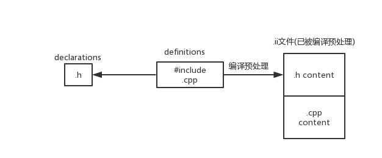

面向对象的特点与视野
Objects = Attributes + Services
对象作为一种抽象概念，包含若干被指定的属性与它所具备的服务应用。
e.g. 类的实现：从C到C++
|
|
对于C++而言，语法更加直观(因为被包装好了)，但需要注意的是，本质上C++的代码依然可以被C的解释器解释。
|
|
什么是面向对象？
- 它是一种组织代码的方法(a way to organize)
- 设计代码(designs)
- 实现代码(implementations)
- 对象是我们设计与实现代码时首要关注的东西，而非数据的处理与传输
面向对象的基本特点
- 万物皆为对象
- 程序是一系列对象的集成，这些对象通过互相通信与耦合完成程序目标
- 每个对象有它专属的内存空间
- 每个对象都有其类型(type,类)
- 同属于同一个特殊类型的对象可以接收相同的message
头文件
头文件是以.h为结尾的文件，用以放置类与函数的声明(declaration)。当你需要在某个文件中定义(defination)它时，必须引用该头文件。
The header is a contract between you and the user of your code.

头文件里能放什么？
- extern variables
- function prototypes 有大括号的是定义，没有大括号的是原型
- class/struct declaration
在头文件中定义的class中，可以直接int a 声明成员变量，这是因为本身就是合法的，但是不能直接在外面int a
之所以只能放声明，是避免多个cpp文件引用同一个.h，产生重复定义
include中的引号与尖括号有什么区别
# include "xx.h"会在当前目录优先搜索xx.h，然后去系统目录中找# include <xx.h>会在系统目录中找# include <xx>同上
文件开头的如下代码依然是编译预处理指令，用于避免在一个cpp文件里引用了同一个.h文件多次。
|
|
实用Tips:
- 每个头文件只放一个类的声明
- 每个头文件只被同名cpp引用
- 头文件内容被#ifndef #define #endif 包裹
:: 解析符
|
|
编译过程
#是编译预处理指令，将头文件抄入.cpp文件，成为.ii文件
在编译中，所有的变量会在前面加一个下划线_
需要注意，编译器在对文件进行编译时，是单文件编译，如果存在一个变量被两个文件重复定义时，编译会通过，但在连接时会出错。
如何对定义一个变量进行声明？
|
|
.h .cpp -> 编译预处理 -> .ii -> 编译 -> .s 汇编代码 -> .o 目标代码 -> .out 最终可执行文件
Linux中的cpp命令指的是编译预处理指令，将编译预处理后的结果返回到终端上。
g++ a.cpp –save-temps 保存所有编译过程中的中间过程文件
g++ a.cpp -Wall 显示出所有的warning
成员变量
对于一个成员函数来说，有三种变量可供使用：
- Fields(字段、成员变量，定义在类中，在一个对象的生成期永远存在，与函数无关)
- parameters(函数参数，与local variables一样。生命周期一样，都放在堆栈里stack，但具体位置有不同)
- local variables(本地变量，与函数有关)
对于C语言而言，如果本地变量与成员变量重名，采取最近原则，优先使用本地变量。
成员变量在哪里？在每一个实例被创造出来以后，生成的。生命周期与类一样。
事实上，函数是属于类的，但是不是说物理上属于，而是逻辑上属于。所有的类最后是通过类似于给成员函数传进一个结构体地址来实现。
|
|
什么时候对象会被析构————当对象脱离作用范围时，比如临近的花括号外，析构函数将曾经申请过的资源都释放掉。
动态内存
new 动态创建对象
- 分配空间
- 分配完空间后调用该类的构造函数
delete
delete有两种写法，delete p 和 delete[] p ，如果你new时是带中括号的，请delete时也带中括号。
e.g.
delete会根据是否有方括号来决定是否逐次析构元素，但空间都是会收回的。
tips：
- 不要用delete去释放不是由new申请的空间
- 不要重复delete
- 如果用了带方括号的new，就要用带方括号的delete
- 可以delete地址为0的空间